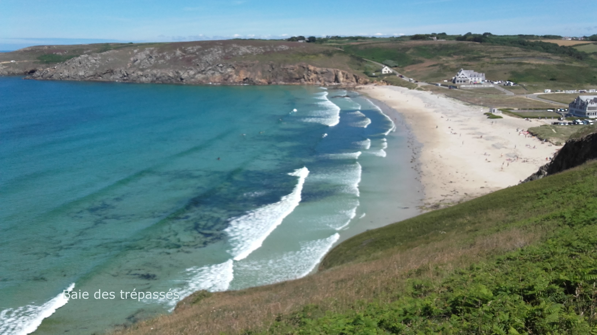
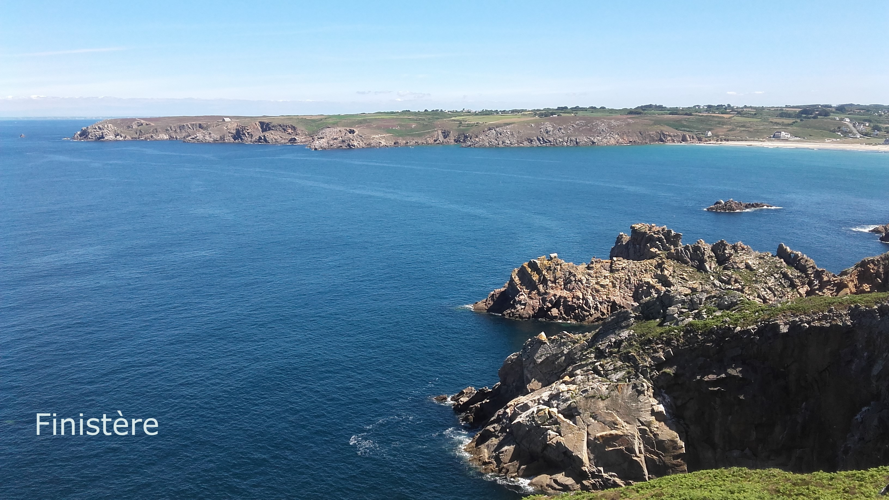
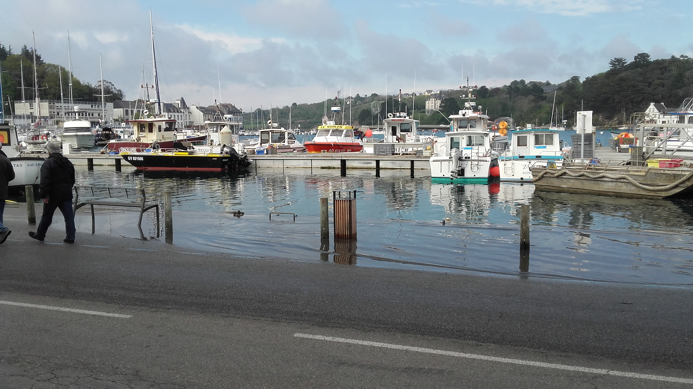
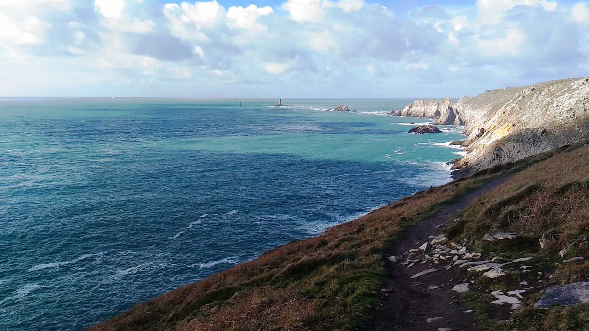
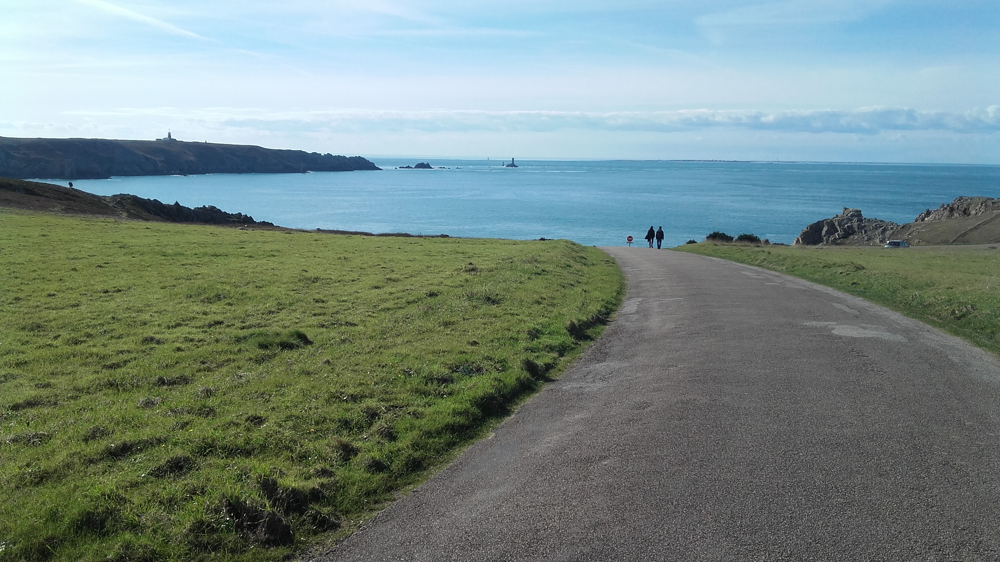
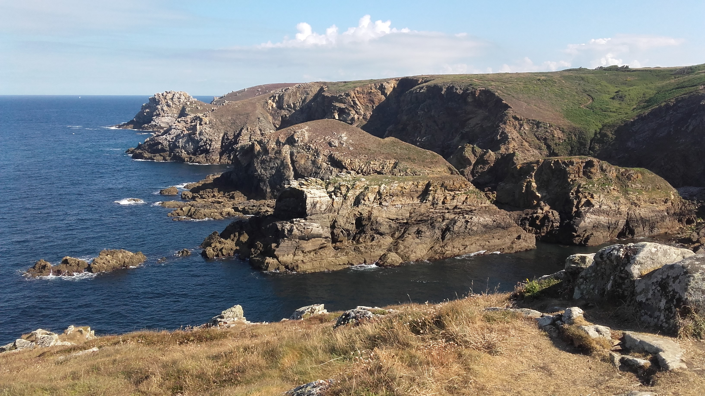
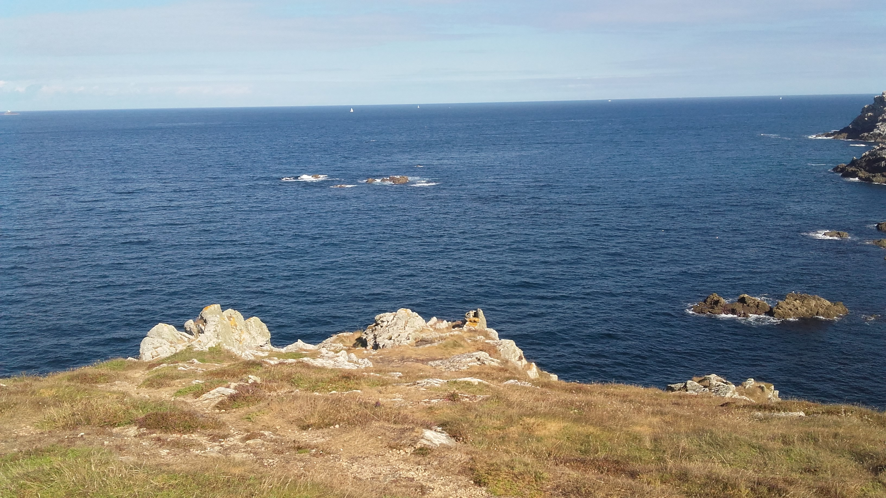
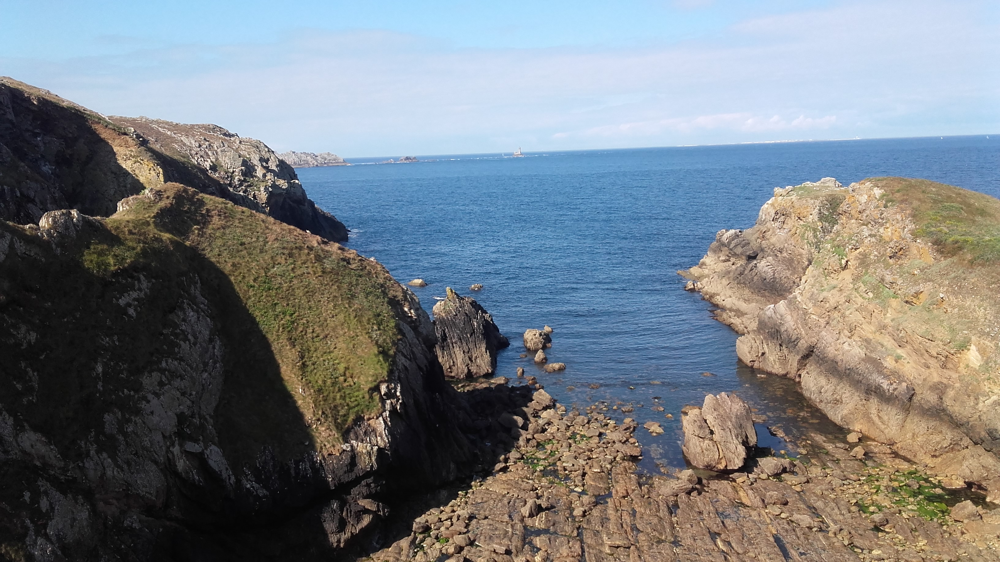
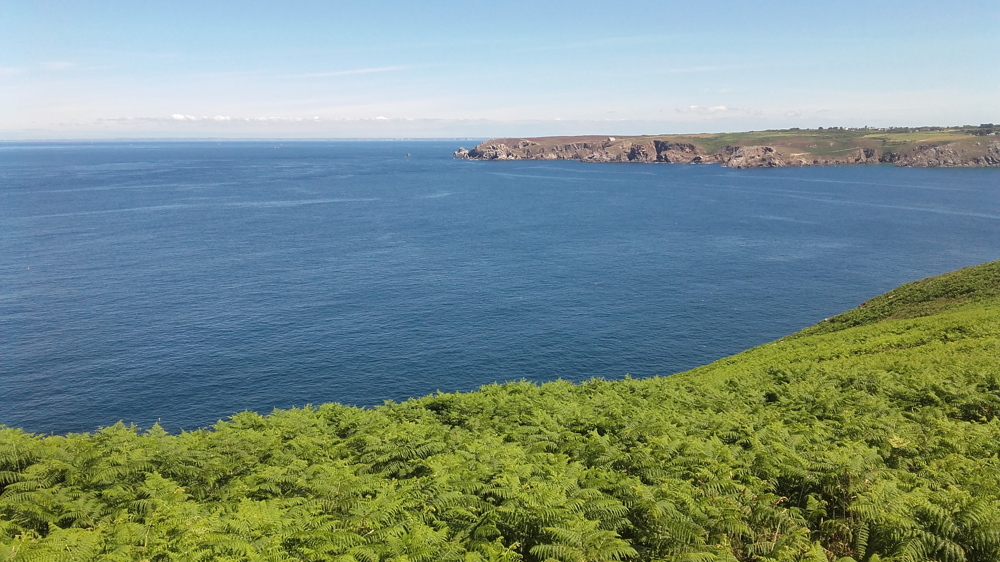
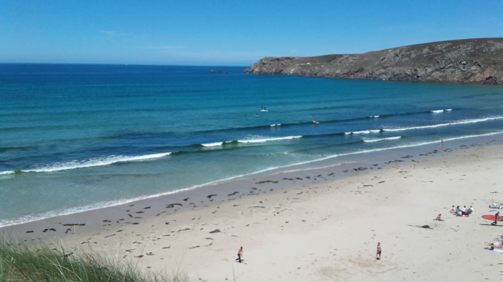

Heure atomique à Paris =
Pays de CORNOUAILLE
AUDIERNE
La ville d'Audierne est une cité balnéaire dont la longue plage est bordée de dunes. C'est le port d'embarquement pour l'ile de Sein (2 kilomètres de long sur 50 à 800 mètres de large), et dont le point culminant est de 8 mètres. A l'ouest de cette plage, la chapelle Saint-Tugen(invoqué contre la rage), de style gothique flamboyant(XVIème siècle, agrandie aux XVIIème et XVIII ème siècle), passe pour être le plus beau monument du cap Sizun. Le port d'Audierne situé dans l'estuaire du Goyen(Gwaien en breton), a été à l'origine de l'essor de la conserverie stoppé net par les crises pétrolières et la concurrence étrangère.









